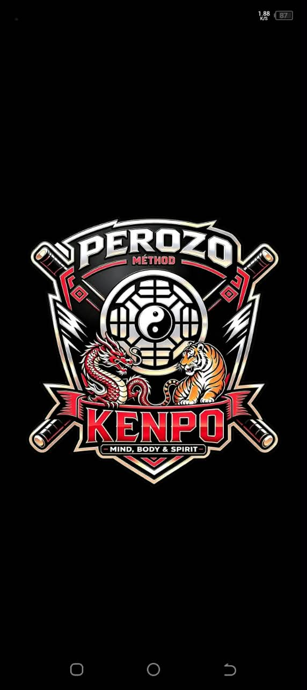
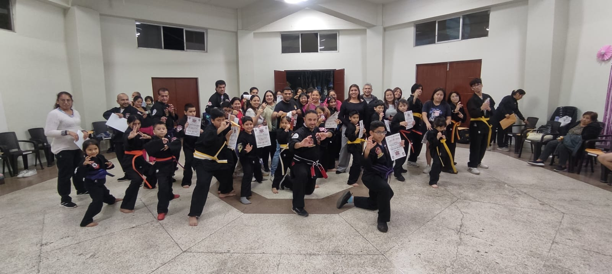
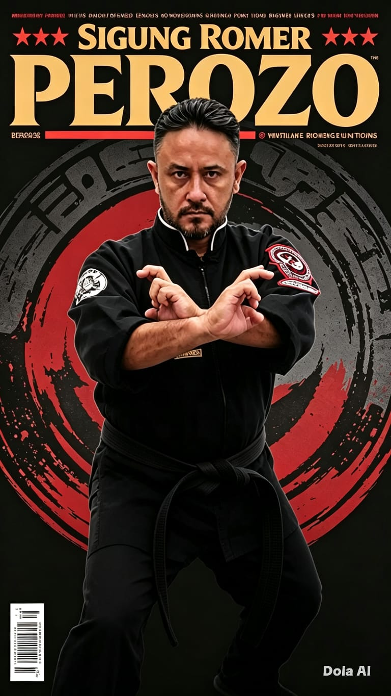

Kenpo
Cinturón negro

ROMER PEROZOARTES MARCIALESDISCIPLINA QUE TRASCIENDE
Desde 1991, un camino de aprendizaje y disciplina. Más de 34 años de experiencia en artes marciales que el maestro Romer Perozo comparte a través de la enseñanza.
Conoce al maestro

01 — EL MAESTRO
Biografía provisional
Practico artes marciales desde 1991. Mi camino comenzó con el taekwondo ITF y continuó con el Kenpo Karate. Con más de 34 años de experiencia, sigo aprendiendo y compartiendo lo que la práctica me ha enseñado.
Mi formación reúne Kenpo, Kajukenbo, arte marcial filipina, Wing Chun, Kickboxing y Taichi Chen, además de diferentes cursos y seminarios.
La enseñanza forma parte de mi camino. Me he preparado a través de cursos de instrucción para niños, jóvenes, adultos, adultos mayores y personas con discapacidad.
02 — TRAYECTORIA
Desde sus primeros entrenamientos en 1991, un recorrido por distintas disciplinas y un compromiso constante con el aprendizaje.
Cinturón negro
Cinturón rojo con bordes negros
Profesor
Instructor
FORMACIÓN CONTINUA
Una trayectoria que sigue creciendo con el estudio y la práctica.
03 — ENSEÑANZA
Formación en instrucción para niños, jóvenes, adultos, adultos mayores y personas con discapacidad. Un camino de enseñanza que reconoce distintas edades y necesidades.
La constancia como parte del aprendizaje.
Una práctica basada en el respeto por uno mismo y por los demás.
Cada entrenamiento, una oportunidad para seguir creciendo.
04 — COMUNIDAD INTERNACIONAL
Una comunidad que comparte el camino marcial, con miembros en España, México y Venezuela.
Próximamente conocerás al maestro que representa a nuestra comunidad en España y su trayectoria en las artes marciales.
Perfil provisionalPróximamente conocerás al maestro que representa a nuestra comunidad en México y su trayectoria en las artes marciales.
Perfil provisionalPróximamente conocerás al maestro que representa a nuestra comunidad en Venezuela y su trayectoria en las artes marciales.
Perfil provisional05 — GALERÍA
Instantes de práctica, aprendizaje y comunidad.